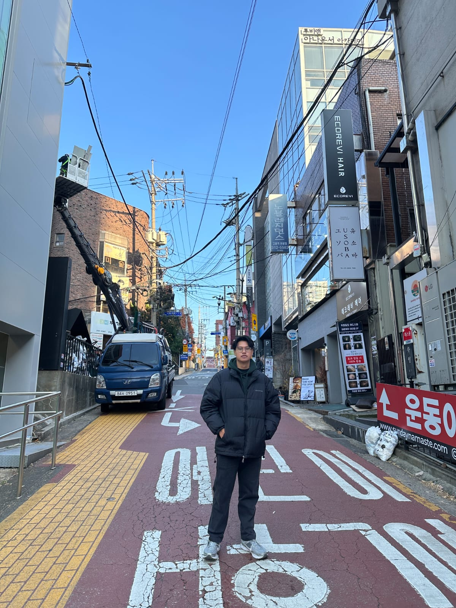
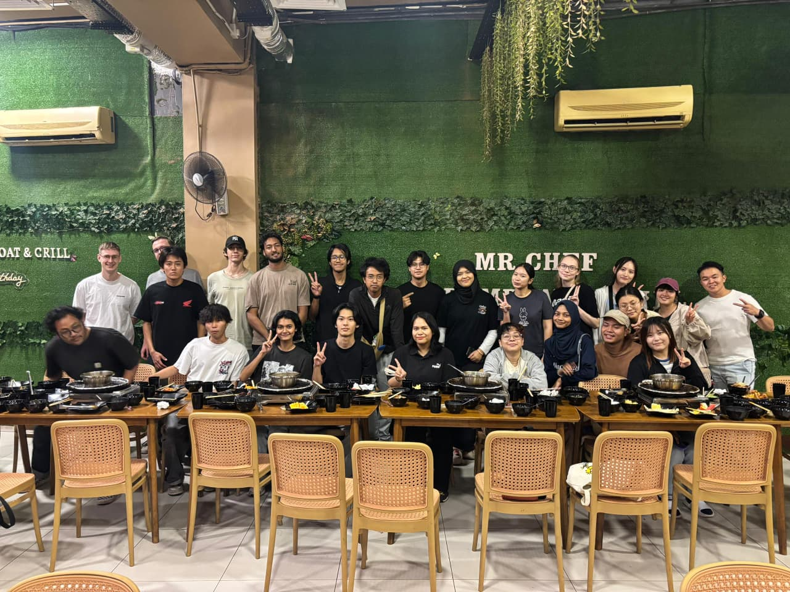
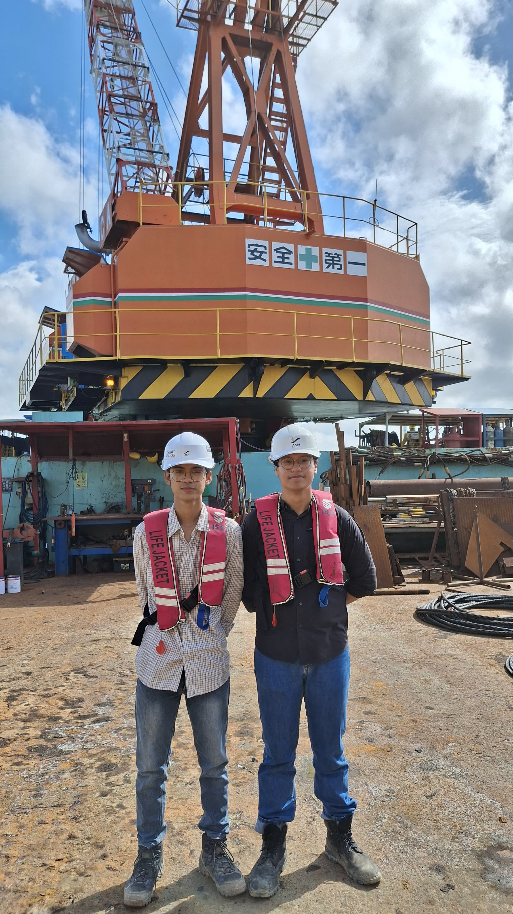

The Travelogue Archives

9 Days in Seoul: Medals, Markets, and Memories
Participating in the Seoul International Invention Fair 2025 was more than just a competition. It was an eye-opening 9-day journey into a culture that beautifully blends rapid innovation with deep-rooted traditions.

Cross-Border Learning: My Life at UTM Johor
Living and studying in Malaysia for a semester gave me a fresh perspective. Here is a brief look into my student exchange experience, the diverse community, and the academic culture at Universiti Teknologi Malaysia.

Lessons from the Field: Patimban Port Internship
Transitioning from classroom theories to the harsh realities of a coastal construction site. My observations on massive port development operations and the critical role of structured coordination.